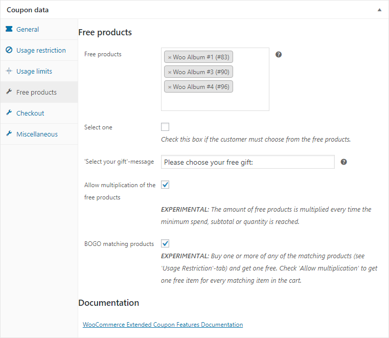
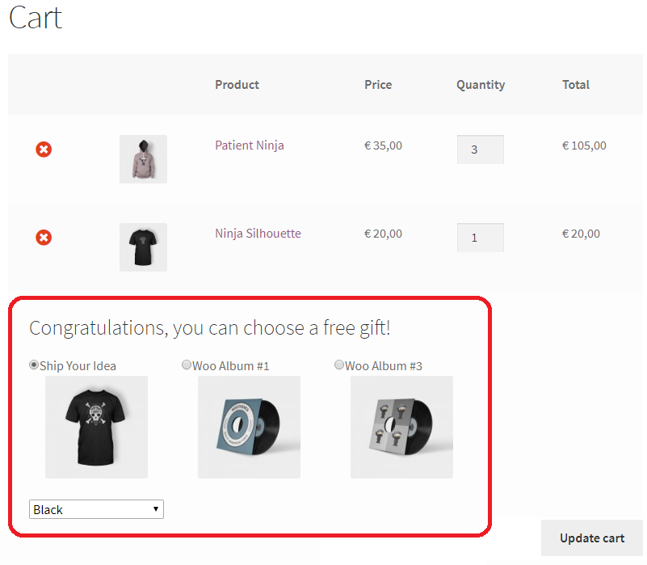

Free products
In the 'Free products'-field on the 'Free products'-tab you can enter one or more products that will automatically be added to the cart when the coupon is applied. The product will automatically be removed when the coupon is no longer valid.
 Watch video
If you tick the 'select one'-checkbox, the customer must choose one (or more) of the selected products on the cart or checkout page. The customer can also choose the desired variations of a variable product. You can also edit the message that is displayed.

If you wish to change the look-and-feel of the product selection you must create a subdirectory woocommerce-auto-added-coupons-pro in your themes directory and copy and edit the files templates/cart/select-free-product.php and templates/checkout/select-free-product.php in here.
Multiplication of free products
When the "Allow multiplication of the free products" option is checked, the number of free products will increase each time the minimum spend, subtotal, or quantity threshold is met. For example, if the minimum spend is set to $50 and the cart total is $160, the free products will be added three times to the cart.
BOGO matching products
When the customer purchases one or more of the matching products (as specified in the Usage Restrictions-tab), they will receive one free. To give a free item for each matching product in the cart, check the "Allow multiplication" option.